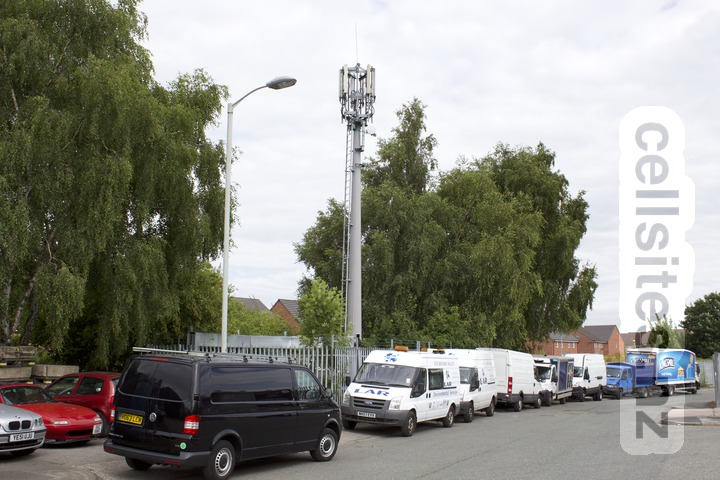
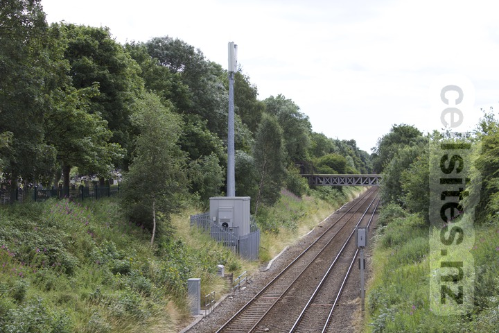
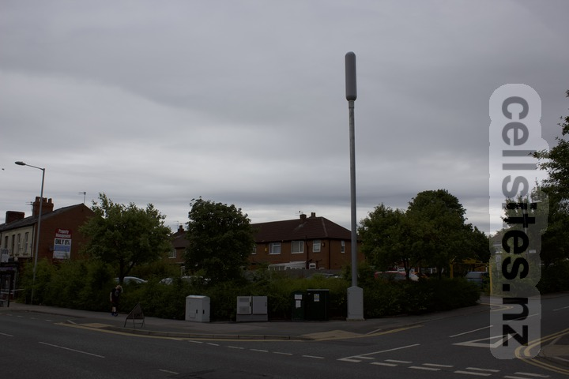

MBNL Station Road
- Operators: Assumed to be EE/Three via MBNL Joint Venture (via Orange).
This site seems to have been previously used by O2 and T-Mobile. However it seems this site became surplus to requirements. T-Mobile merged with Orange and it seems the nearby Orange site has survived the merge. O2 entered into a Joint Venture with Vodafone called Cornerstone. It seems the nearby Vodafone site was selected over this O2 site for intergration into the Cornerstone network.


